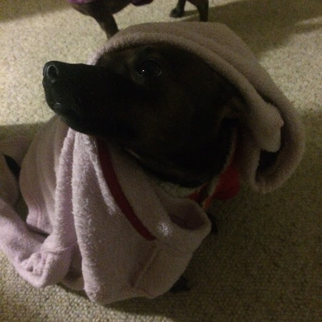
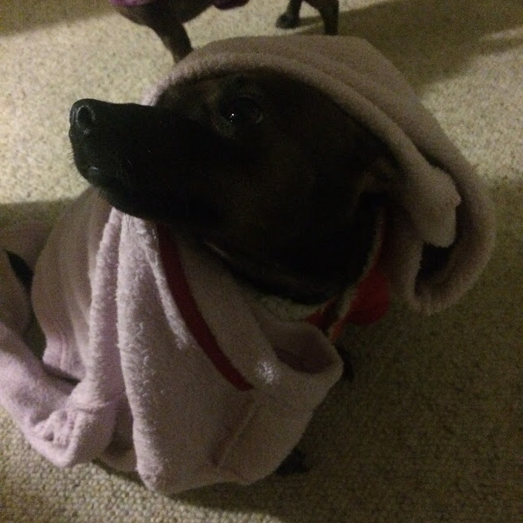

Puddin is about 6 years old. She was found on the side of the road in Sacramento. Thankfully, someone found her and she was sheltered at The Milo Foundation in Richmond where we adopted her. She is such a friendly dog, and loves children. She has gotten a bit chubby from my mother feeding her human food, but she is still full of life. Her current diet is eating raw food and is so spoiled that I have to personally fork feed her.
Likes:Wearing clothes, eating, going on walks, sunbathing, chasing flies, sleeping, cuddling, getting pet, attention, and chicken!
Dislikes:Getting showered, getting interrupted when she’s sleeping, getting left alone.
Fun Fact:She is my best friend!